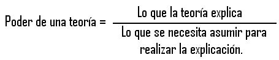
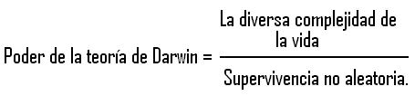
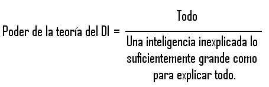

Charles Darwin tuvo una gran idea; quizás una de las ideas más poderosas de todos los tiempos. Una idea poderosa asume muy poco para explicar mucho. Dicha idea realiza un montón de trabajo explicatorio mientras invierte muy poco en la asunción o postulación; brinda un gran aprovechamiento para el esfuerzo explicatorio realizado. Su tasa de explicación, o tasa explicatoria - lo que la teoría explica dividido entre lo que se necesita asumir para generar la explicación - es muy grande.

Si algún lector sabe de alguna idea que tenga una tasa explicatoria más grande que la de Darwin, pues oigámosla. La gran idea de Darwin explica todo acerca de la vida y sus consecuencias, y eso significa todo lo que posea más que una complejidad mínima. Ese es el numerador de la Tasa Explicatoria, y es enorme. El denominador es espectacularmente pequeño y simple: la selección natural, la supervivencia no aleatoria de genes en los acervos génicos (para ponerlo en términos neodarwinianos más que en los del mismo Darwin).

La selección natural es una bomba de improbabilidades - un proceso que genera improbabilidad estadística. La selección natural, sistemáticamente captura aquella pequeña parte de cambios aleatorios que se requieren para la supervivencia, y los acumula en una secuencia de pequeños pasos en escalas de tiempo inimaginables, hasta que la evolución eventualmente escale montañas de improbabilidad y diversidad cuyas alturas y rangos parezcan no tener límites. Pero es magníficamente simple que se pueda reducir la gran idea de Darwin a una sola oración (nuevamente, esta es una forma neodarwiniana de ponerlo, y no del propio Darwin): Después de un tiempo necesario, la supervivencia no aleatoria de las entidades hereditarias (las cuales, ocasionalmente, se copian erróneamente) generarán complejidad, diversidad, belleza y una ilusión de diseño tan persuasivo que es casi imposible distinguirlo de diseño inteligente deliberado.
He puesto la frase “que ocasionalmente se copian erróneamente” entre paréntesis, debido a que los errores son inevitables en cualquier proceso de copia. No necesitamos añadir las mutaciones a nuestras asunciones. Los “esfuerzos” mutacionales son provistos gratuitamente. “Después de un tiempo necesario” tampoco es un problema - excepto por el problema de comprensión de parte de las mentes humanas luchando por imaginarse la aterrorizante magnitud del tiempo geológico.
Es principalmente el poder de simular la ilusión de diseño lo que hace a la teoría de Darwin amenazadora para ciertas mentes. Este mismo poder constituye la más formidable barrera para comprenderla. La gente es naturalmente incrédula cuando algo tan simple puede explicar tanto. Para un observador ingenuo de la maravillosa complejidad de la vida, resulta en extremo evidente que ésta debe ser diseñada inteligentemente. Pero el diseño inteligente (DI) es el opuesto polar de una potente teoría: su tasa explicatoria es patética. El numerador es el mismo: todo lo que sabemos de la vida y su prodigiosa complejidad. Pero el denominador, muy lejano de la simplicidad prístina y minimalista de Darwin, es por lo menos tan grande como el numerador mismo: ¡una inteligencia inexplicada lo suficientemente grande como para ser capaz de diseñar toda la complejidad que tratamos de explicar en primera instancia!

Darwin entendió el inmenso poder de su teoría. Así lo hizo también Alfred Russel Wallace, el magnánimo héroe cuyo descubrimiento independiente impulsó a Darwin situando su magnífica obra de la selección natural muy en alto, y favoreciendo lo que él llamó su tesis: El Origen de las Especies.
Los derechos de los créditos fueron reclamados por varias personas, incluyendo a Patrick Matthew en el apéndice a un trabajo de cultivo de árboles utilizados para la industria de la construcción de embarcaciones, a lo que Darwin agradeció en ediciones posteriores de El Origen de las Especies. Sin embargo, aunque Matthew entendió el principio de selección natural, no está tan claro que haya entendido su poder para explicar toda la vida. A diferencia de Darwin y Wallace, parece que él veía a la selección como puramente negativa, como una fuerza de eliminación y no como una fuerza universal conductora. En efecto, él pensó que la selección natural era tan obvia que no constituía un descubrimiento positivo en lo absoluto.
Aquí puede encontrarse la respuesta a uno de los más persistentes rompecabezas en la historia de las ideas. Después de la brillante síntesis de la física por parte de Newton, ¿por qué tomó cerca de doscientos años para que Darwin apareciera en escena? ¡El logro de Newton parecía mucho más difícil!
Quizás la respuesta es que la solución eventual de Darwin al misterio de la vida fue tan asombrosamente simple que nadie pensó en verlo de ese modo. Es tan simple que la frase “la supervivencia del más apto” (el renombramiento que Darwin adoptó de Herbert Spencer debido al aliento de Wallace), ha sido descrita como una tautología: los más aptos son definidos como aquellos que sobreviven, por lo que la famosa frase significa “aquellos que sobreviven a la supervivencia”. Pero si fuera realmente una tautología, lo mismo podría aplicarse a la selección artificial, la cría no aleatoria de animales y plantas domésticas (a los cuales Darwin prestó mucha atención). Imagínese el lector la poca acogida que tendría un mal filósofo luego de decirle esto a un criador de ganado: “Estás perdiendo el tiempo. ¡Ninguna mejora en la producción de leche puede provenir de una tautología!”
Pero Darwin no definió a los más aptos como aquellos que sobrevivían. Sus “más aptos” eran aquellos provistos del mejor equipamiento para sobrevivir, y eso hace toda la diferencia.
Por cierto, Darwin tuvo muchas otras buenas ideas (por ejemplo, su ingeniosa y muy correcta teoría de cómo se forman los arrecifes de coral), pero es su gran idea de selección natural a la que me refiero aquí. Pienso que incluso es mucho más poderosa de lo que yo he sugerido. No solo es la explicación para la vida en este planeta, es la única teoría jamás sugerida que puede, al menos en principio, explicar la vida en cualquier planeta. Si la vida existe en cualquier parte del Universo (y mi apuesta tentativa es que sí existe), por más extraña y rara que pueda ser su naturaleza (y mi apuesta tentativa es que será más rara de lo que podemos imaginar), alguna versión de la evolución darwiniana por selección natural estará casi seguramente presente para poder explicar su existencia. Esta es, al menos, la idea a la cual apostaré: el principio que he denominado “Darwinismo Universal”.
Existe un sentido diferente del Darwinismo Universal, que quisiera criticar. Este es el arrastre acrítico de una confusa versión de la selección natural hacia cualquier campo del discurso humano disponible, tanto si es apropiado como si no. Quizás las empresas más aptas sobrevivan en el mercado, o las teorías más aptas sobrevivan en el ámbito científico, pero deberíamos ser al menos cautos antes de vernos descarriados en los conceptos. Y por supuesto, estaba el Darwinismo Social, culminado con la obscenidad del Hitlerismo. Menos detestable pero, aún así, intelectualmente inútil es la manera débil y acrítica en la que los biólogos aficionados aplican la selección a niveles inapropiados en la jerarquía de la vida. “La supervivencia de las especies más aptas y la extinción de las especies menos adaptadas” suena superficialmente como verdadera selección natural, pero la aparente similitud es seguramente engañosa.
Como el mismo Darwin se esforzaba por señalar, la selección natural trata acerca de supervivencia diferencial dentro de una especie, no entre ellas.
La gran idea de Darwin ha evolucionado. La ciencia evolutiva del siglo XXI, si Darwin pudiera regresar para verla, lo cautivaría, sorprendería, y emocionaría. Pero la reconocería como propia. Nosotros solo estamos coloreando los detalles. Para mí, el pensador más importante que la especie humana ha producido es Charles Darwin.
Voy a concluir con un legado sutil que la gran idea de Darwin nos ha dejado. Darwin elevó nuestras consciencias hasta el gran poder de la ciencia para explicar lo grande y complejo en términos de lo pequeño y lo simple. En biología, nos hemos visto embaucados durante siglos pensando que la extravagante complejidad en la naturaleza necesita una explicación extravagante y compleja. Darwin, triunfantemente desechó esa ilusión. Aún hay grandes preguntas, en física y cosmología, que esperan por sus propios Darwins. ¿Por qué son las leyes de la física como son? ¿Por qué existen leyes? ¿Por qué existe el Universo? Una vez más, la idea de “diseño” resulta tentadora, pero tenemos la cautelar idea de Darwin antes de nosotros. Ya hemos pasado por todo eso en el pasado. Darwin elevó nuestras consciencias, y ahora tenemos el valor como para buscar explicaciones verdaderas de genuino poder.
Richard Dawkins es biólogo evolutivo, nació en Nairobi, Kenya, en 1941 y se educó en la Universidad de Oxford. Comenzó su carrera como investigador en los 60, estudiando bajo la dirección del etólogo Nico Tinbergen, ganador del premio Nóbel, y desde entonces su trabajo ha girado en torno a la evolución del comportamiento. Ha obtenido las cátedras Gifford de la Universidad de Glasgow y Sidwich del Newham College de Cambridge. Además ha sido profesor de zoología de las universidades de Oxford y California, ha presentado programas de la BBC y dirigido varias publicaciones científicas. En 1995 se convirtió en el primer titular de la recién creada cátedra Charles Simony de Divulgación Científica en la Universidad de Oxford. Autor de obras muy leídas como:
El gen egoísta (1976; segunda edición, 1989; tercera, 2006)
El fenotipo extendido (1982)
El relojero ciego
El río del Edén (1995)
Escalando el monte improbable (1996)
Destejiendo el arco iris (1998) — Dawkins, con ironía pero también con rigor científico, se enfrenta a las pseudociencias mostrando lo que son: fraude, ilusión, alucinación, error o embuste.
El capellán del diablo (2003)
The Ancestor’s Tale: A Pilgrimage to the Dawn of Evolution (2004); El cuento del antepasado: un viaje a los albores de la evolución (2008)
The God Delusion (2006); El espejismo de Dios (2007)
The Greatest Show on Earth: The Evidence for Evolution (2009) (Evolución. El mayor espectáculo sobre la Tierra)
Volver a la sección Ciencias de los orígenes
Comentarios
Comments powered by Disqus